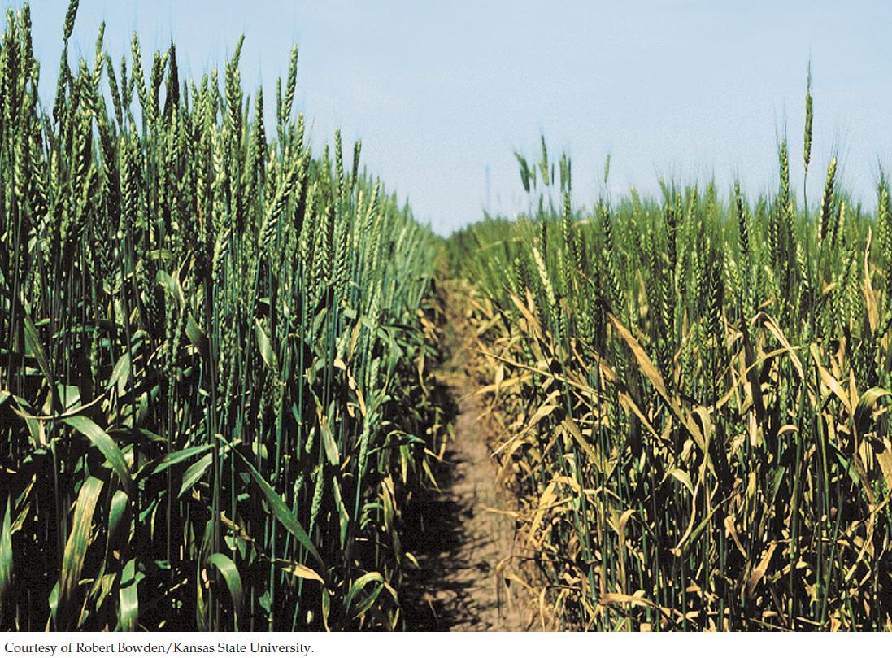

| 28 | Plants in the Environment |
|

A field of wheat infected with the wheat rust fungus (right) has a much reduced growth rate and produces much less grain than an uninfected field of wheat that is resistant to the fungus (left).
|
In late 1998, William Wagoire, a plant geneticist in Uganda, was astounded when he noticed some red blotches on the stems of wheat plants he was breeding. Wheat rust (Puccinia graminis), the fungus that causes the blotches, had supposedly been rendered almost extinct 25 years previously by the “Green Revolution,” when a gene from rye plants had been crossed into wheat, making it resistant to this fungal disease. This landmark achievement had protected the crop that provides one-third of the human diet from a mold that can devastate it.
Two generations of farmers worldwide had never seen an epidemic of wheat rust, but its presence in history is vivid. Even the ancient Romans feared this disease, worshipping a god, “Robigus,” who was thought to help their crop ward off the mold. In the seventeenth century, the early colonists in Massachusetts almost starved because the wheat they planted got infected with wheat rust. In 1917, an epidemic of wheat rust in the United States reduced the crop by one-third, leading to widespread panic.
Wagoire used DNA markers to identify the strain of wheat rust he had found (called Ug99 for Uganda 1999). When he compared it with known strains, which are stored in a few laboratories, he found that his strain was new and unique. Clearly, Ug99 had evolved a way to get around the resistance genes in modern wheat.
When the blotches of wheat rust on a stem burst, they release thousands of spores, any one of which can be carried by the wind to a susceptible plant. When you consider that 1 hectare of an infected wheat field can release more than 10 billion spores, the possibility of epidemic spread becomes apparent. Ug99 has begun a relentless path of infection, carried by prevailing winds. By 2001 it had infected wheat in Kenya; in 2003 it was in Ethiopia; in 2006 it crossed the Red Sea to Yemen; in 2009 it was in Iran; at the same time, winds carried the spores south to Zimbabwe and South Africa. Biologists fear that Ug99 could reach central Asia and Australia by prevailing winds, and even North America by the “747 route,” accidentally dusting a traveler’s clothes somewhere in the now widespread infective region. The Borlaug Global Rust Initiative has been set up to try to use knowledge of plant and fungal biology to stop the spread of this disease before it is too late.
How can knowledge of plant and fungal biology be used to prevent the spread of wheat rust?